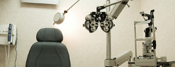

EYE EXAM
The eye examination is a very professional medical service that requires complicated and technical knowledge. Every licensed optometrist must attend four years of Optometry School after college, and many hours of fellowships and residency just like any medical doctors. As competition rises, many of our competitors offer free examination to draw in more customers. As a way to maintain the integrity and show respect for the optometric profession and to our doctors, we don't offer free exams. However, as a token of appreciation for being our customers, the exam fee that we charge is much less than the cost. It is our way of saying thanks to our valued customers, without disregarding the value of a highly-respected medical profession.
At Chinatown Optical, Hunter Vision Center, and Brooklyn Optical, you can be assured that you'll receive the best optical care by our licensed Optometrists and Opticians; we use the latest technology and equipments to accurately measure any refractive error and thoroughly exam your eyes'conditions. Regular annual eye examinations are important throughout life, whether or not you are experiencing problems with your eyesight. Our optometrists will not only test your vision and prescribe glasses or contact lenses to you if necessary, but will also check closely for any early signs of eye disease or other medical condition.
CONTACT LENSES
At Chinatown Optical Group, your satisfaction is our priority. Our contact lenses value package allows you to receive the most professional care and best value for your lenses. It's the most convenient and are the best value packages that you can find.
New Eye Exam (training and lenses education is included for first timers)
+
Free Trial Lenses (starter-kit solutions with complimentary case and solution are also included)
+
New Contact Lenses (free shipping for 1-year supply)
INSURANCE
Chinatown Optical Group is the proud provider of many insurance plans from private companies like Davisvision, unions, and government sponsored ones like Medicaid. Our staff is professionally trained to answer all your questions and concerns.
Most plans allow you to get upgrades for your frames and/or lenses, so you don't need to settle for less! Please go to the store or email the store closest to you for details.
Chinatown Optical: Chinatown@CopticalGroup.com
Hunter Vision Center: Hunter@CopticalGroup.com
Brooklyn Optical: Brooklyn@CopticalGroup.com
FLEXIBLE SPENDING
Take advantage of your company's benefit and reward yourself at the end of the year with a pair of stylish new glasses from your Flexible Spending Account. Our savvy eyewear consultant can help you pick out a pair that's suitable for your professional needs and help you stand out from the crowd!
CHILDREN'S FRAMES
We have a huge selection of children's frames for we know how important it is for the young child to find the pair they love. Children usually need glasses and usually fear getting glasses for the first time. Here at Chinatown Optical Group, we take care to provide them with the help and support they need to not only find the pair they love, but also to educate them about the needs and causes of wearing glasses. Your child's eyes are important to you and also to us.
At every store, there is a special book called Glasses for Me, Oh NO! by Kaleena Ma available for purchase that speaks about a little girl getting glasses for the first time. This book will be available only a litmited time and for every purchase, a portion will be given to a charity of choice.